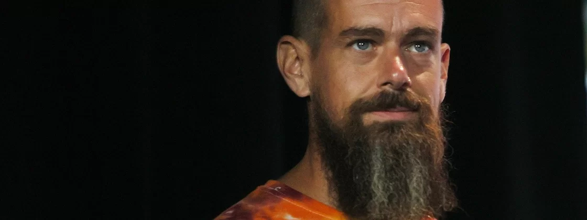

Noticias Cidade
Tecnologia
Data: 25/10/2022.
Por: Daniel Silveira.
Fundador do Twitter abre vagas para nova rede social Bluesky.

Dorsey deixou a posição de CEO do Twitter em novembro de 2021.
Pouco depois de Elon Musk confirmar a compra do Twitter, o ex-CEO e fundador da rede social, Jack Dorsey, anunciou a versão beta da sua nova plataforma social: a Bluesky. Há pouco mais de uma semana, a empresa abriu vagas para aqueles que desejam testar a novidade e milhares de pessoas já se inscreveram.
Pouco após anunciar que está buscando por usuários para testar a versão beta, a Bluesky atraiu mais de 30 mil participantes. Foi disponibilizada uma página oficial para os usuários interessados se inscrevem e testarem a nova plataforma.
A rede social é baseada na tecnologia de blockchain e, segundo Dorsey, segue um padrão aberto e descentralizado de mídias sociais. Segundo o Gizmodo, a Bluesky usa a tecnologia "AT Protocol", que entregará aos usuários o controle dos algoritimos da plataforma.
Wow. 30k signups for our app’s waiting list in the last two days! Thanks for the overwhelming interest, we’ll do our best to get you in soon. 🔜
— bluesky (@bluesky) October 20, 2022